前言
Apache Hadoop 是一个由 Apache 基金会所开发的分布式系统基础架构。用户可以在不了解分布式底层细节的情况下，开发分布式程序。充分利用集群的威力进行高速运算和存储。
本教程适用于原生 Hadoop 2，包括 Hadoop 2.6.0，Hadoop 2.7.2 等版本，主要参考了官方安装教程以及厦门大学数据库实验室教程，步骤非常详细，相信按照步骤来，都能顺利安装并运行 Hadoop。本教程由 精神偏微分 出品，转载请注明。
系统环境
本教程使用 Ubuntu 14.04 64位 作为系统环境（Ubuntu 12.04 也行，32位、64位均可），请自行安装系统。
本教程基于原生 Hadoop 2，在 Hadoop 2.7.2 版本下验证通过，可适合任何 Hadoop 2.x.y 版本，例如 Hadoop 2.4.1。
Hadoop 版本
Hadoop 有两个主要版本，Hadoop 1.x.y 和 Hadoop 2.x.y 系列。比较老的教材上用的可能是 Hadoop 0.20 这样的版本。Hadoop 2.x 版本在不断更新，本教程均可适用。如果需安装 Hadoop 0.20，Hadoop 1.2.1 这样的版本，本教程也可以作为参考，主要差别在于配置项，配置请参考官网教程或其他教程。
新版是兼容旧版的，书上旧版本的代码应该能够正常运行。
在装好了 Ubuntu 系统之后，在安装 Hadoop 前还需要做一些准备工作。
创建 Hadoop 用户
为统一教程适用人群，如果你安装 Ubuntu 的时候不是用的 hadoop 用户，那么需要增加一个名为 hadoop 的用户。
首先按 ctrl+alt+t 打开终端窗口，输入如下命令创建新用户：
$ sudo useradd -m hadoop -s /bin/bash
这条命令创建了可以登陆的 hadoop 用户，并使用 /bin/bash 作为 shell。
Ubuntu 终端复制粘贴快捷键
在 Ubuntu 终端窗口中，复制粘贴的快捷键需要加上 shift，即粘贴是 ctrl+shift+v。
接着使用如下命令设置密码，可简单设置为 hadoop，按提示输入两次密码：
$ sudo passwd hadoop
可为 hadoop 用户增加管理员权限，方便部署，避免一些对新手来说比较棘手的权限问题：
$ sudo adduser hadoop sudo
最后注销当前用户（点击屏幕右上角的齿轮，选择注销），在登陆界面使用刚创建的 hadoop 用户进行登陆。
更新 apt
用 hadoop 用户登陆后，我们先更新一下 apt，后续我们使用 apt 安装软件，如果没有更新可能有一些软件安装不了。按 ctrl+alt+t 打开终端窗口，执行如下命令：
$ sudo apt-get update
后续需要更改一些配置文件，我个人比较喜欢用的是 vim（vi 增强版，基本用法相同），建议安装一下（如果你实在还不会用 vi/vim 的，请将后面用到 vim 的地方改为 gedit，这样可以使用文本编辑器进行修改，并且每次文件更改完成后请关闭整个 gedit 程序，否则会占用终端）：
$ sudo apt-get install vim
安装文件时若需要确认，在提示处输入 y 即可。
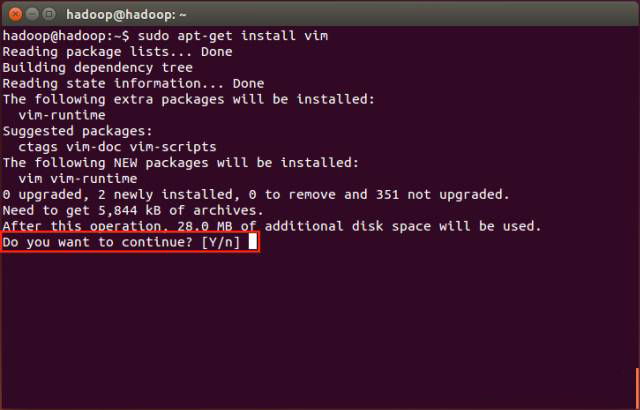
安装 SSH、配置 SSH 无密码登陆
集群、单节点模式都需要用到 SSH 登陆（类似于远程登录，你可以登陆某台 Linux主机，并且在上面运行命令），Ubuntu 默认已安装了 SSH client，此外还需要安装 SSH server：
$ sudo apt-get install openssh-server
安装后，可以使用如下命令登陆本机：
$ ssh localhost
此时会有如下提示（SSH首次登陆提示），输入 yes。然后按提示输入密码 hadoop，这样就登陆到本机了。
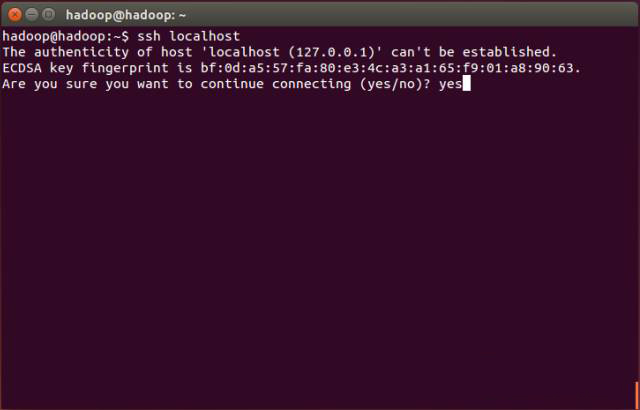
但这样登陆是需要每次输入密码的，我们需要配置成 SSH 无密码登陆比较方便。首先退出刚才的 ssh，就回到了我们原先的终端窗口，然后利用 ssh-keygen 生成密钥，并将密钥加入到授权中（会有提示，都按回车就可以）：
$ exit
$ cd ~/.ssh/
$ ssh-keygen -t rsa
$ cat ./id_rsa.pub >> ./authorized_keys
~ 的含义
在 Linux 系统中，~代表的是用户的主文件夹，即/home/用户名这个目录，如你的用户名为 hadoop，则 ~ 就代表/home/hadoop/。
此时再用 ssh localhost 命令，无需输入密码就可以直接登陆了，如下图所示。
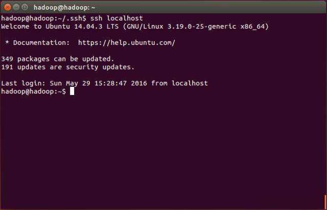
安装 Java 环境
Java 环境可选择 Oracle 的 JDK，或是 OpenJDK，按 http://wiki.apache.org/hadoop/HadoopJavaVersions 中说的，新版本在 OpenJDK 1.7 下是没问题的。为图方便，这边直接通过命令安装 OpenJDK 7。
$ sudo apt-get install openjdk-7-jre openjdk-7-jdk
JRE 和 JDK 的区别
JRE（Java Runtime Environment，Java 运行环境），是运行 Java 所需的环境。JDK（Java Development Kit，Java 软件开发工具包）即包括 JRE，还包括开发 Java 程序所需的工具和类库。
安装好 OpenJDK 后，需要找到相应的安装路径，这个路径是由 JAVA_HOME 环境变量所配置的。执行如下命令：
$ dpkg -L openjdk-7-jdk | grep '/bin/javac'
该命令会输出一个路径，除去路径末尾的 /bin/bash，剩下的就是正确的路径了。如输出的路径为 /usr/lib/jvm/java-7-openjdk-amd64/bin/javac，则我们需要的路径为 /usr/lib/jvm/java-7-openjdk-amd64。
接着配置 JAVA_HOME 环境变量，为方便，我们在 ~/.bashrc 中进行设置：
$ vim ~/.bashrc
在文件最前面添加如下单独一行（注意 = 号前后不能有空格），将"JDK 安装路径"改为上述命令得到的路径，并保存：
$ export JAVA_HOME=JDK安装路径
如下图所示（该文件原本可能不存在，内容为空，这不影响）
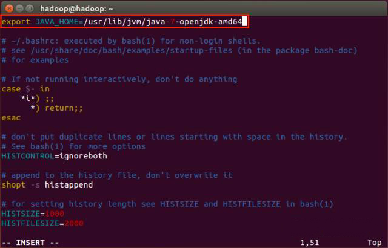
接着还需要让环境变量生效，执行如下代码：
$ source ~/.bashrc
设置好后我们来检验一下是否设置正确：
$ echo $JAVA_HOME
$ java -version
$ $JAVA_HOME/bin/java -version
如果设置正确的话，$JAVA_HOME/bin/java -version 会输出 Java 的版本信息，且和 java -version 的输出结果一样，如下图所示：
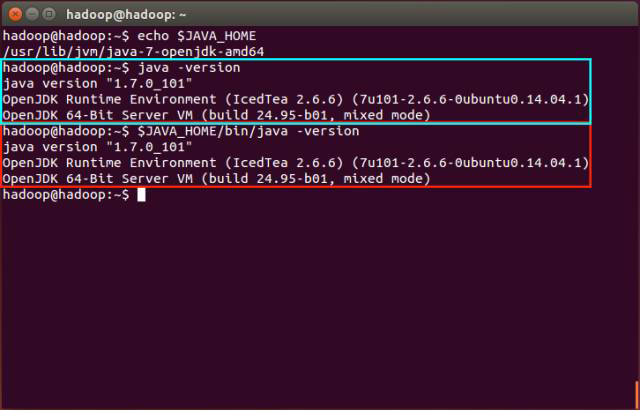
这样，Hadoop 所需的 Java 运行环境就安装好了。
安装 Hadoop 2
Hadoop 2 可以通过 http://mirror.bit.edu.cn/apache/hadoop/common/ 或者 http://mirrors.cnnic.cn/apache/hadoop/common/ 下载，一般选择下载最新的稳定版本，即下载"stable"下的 hadoop-2.x.y.tar.gz 这个格式的文件，这是编译好的，另一个包含 src 的则是 Hadoop 源代码，需要进行编译才可使用。更多镜像下载网址请参考 http://www.apache.org/dyn/closer.cgi/hadoop/common。
下载时强烈建议也下载 hadoop-2.x.y.tar.gz.mds 这个文件，该文件包含了检验值可用于检查 hadoop-2.x.y.tar.gz 的完整性，否则若文件发生了损坏或下载不完整，Hadoop 将无法正常运行。
本文涉及的文件均通过浏览器下载，默认保存在"Downloads"目录中（若不是请自行更改 tar 命令的相应目录）。另外，本教程选择的是 2.7.2 版本，如果你用的不是 2.7.2 版本，则将所有命令中出现的 2.7.2 更改为你所使用的版本。
$ head -n 6 ~/Downloads/hadoop-2.7.2.tar.gz.mds
$ md5sum ~/Downloads/hadoop-2.7.2.tar.gz | tr "a-z" "A-Z"
若文件不完整则这两个值一般差别很大，可以简单对比下前几个字符和后几个字符是否相等即可，如下图所示，如果这两个值不一样，请务必重新下载。
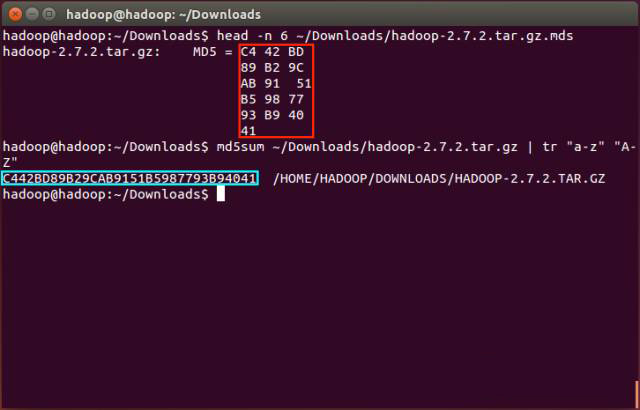
我们选择将 Hadoop 安装至 /usr/local 中：
$ sudo tar -zxf ~/Downloads/hadoop-2.7.2.tar.gz -C /usr/local
$ cd /usr/local/
$ sudo mv ./hadoop-2.7.2/ ./hadoop
$ sudo chown -R hadoop:hadoop ./hadoop
Hadoop 解压后即可以使用。输入如下命令来检查 Hadoop 是否可用，成功则会显示 Hadoop 版本信息：
$ cd /usr/local/hadoop
$ ./bin/hadoop version
相对路径与绝对路径的区别
请务必注意命令中的相对路径与绝对路径，本文后续出现的./bin/...，./etc/...等包含./的路径，均为相对路径，以/usr/local/hadoop为当前目录。例如在/usr/local/hadoop目录中执行./bin/hadoop version等同于执行/usr/local/hadoop/bin/hadoop version。可以将相对路径改为绝对路径来执行，但如果你是在主文件夹~中执行./bin/hadoop version，执行的会是/home/hadoop/bin/hadoop version，就不是我们所想要的了。
Hadoop 伪分布式配置
Hadoop 可以在单节点上以伪分布式的方式进行，Hadoop 进程以分离的 Java 进程来进行，节点即作为 NameNode 也作为 DataNode，同时，读取的是 HDFS 中的文件。
Hadoop 的配置文件位于 /usr/local/hadoop/etc/hadoop/ 中，伪分布式需要修改2个配置文件 core-site.xml 和 hdfs-site.xml。Hadoop 的配置文件是 xml 格式，每个配置以声明 property 的 name 和 value 的方式来实现。
修改配置文件 core-site.xml（通过 gedit 编辑会比较方便：gedit ./etc/hadoop/core-site.xml），将当中的

修改为下面配置：
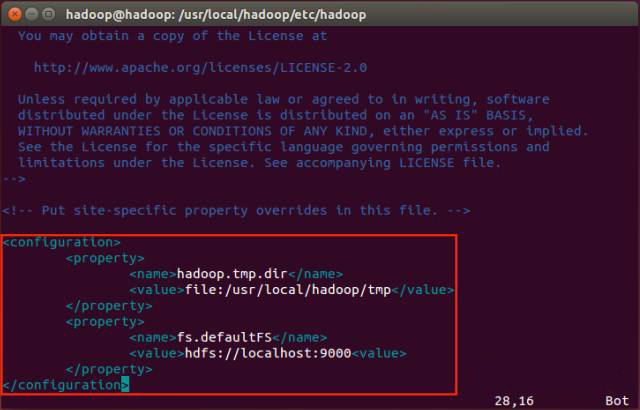
同样的，修改配置文件 hdfs-site.xml：
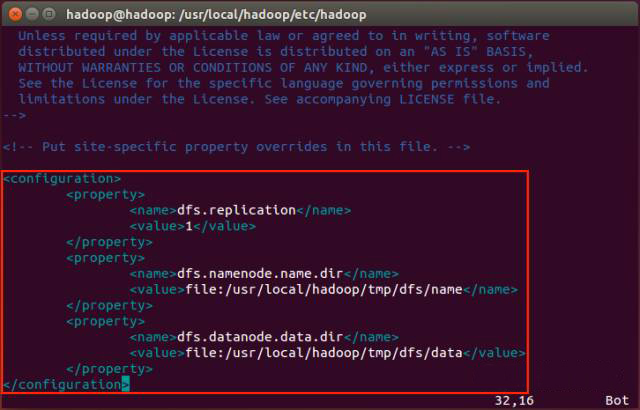
Hadoop 配置文件说明
Hadoop 的运行方式是由配置文件决定的（运行 Hadoop 时会读取配置文件），因此如果需要从伪分布式模式切换回分布式模式，需要删除 core-site.xml 中的配置项。
此外，伪分布式虽然只需要配置 fs.defaultFS 和 dfs.replication 就可以运行（官方教程如此），不过若没有配置 hadoop.tmp.dir 参数，则默认使用的临时目录为/tmp/hadoop，而这个目录在重启时有可能被系统清理掉，导致必须重新执行 format 才行。所以我们进行了设置，同时也指定 dfs.namenode.name.dir 和 dfs.datanode.data.dir，否则在接下来的步骤中可能会出错。
配置完成后，执行 NameNode 的格式化：
$ ./bin/hdfs namenode -format
成功的话，会看到"successfully formatted"和"Exitting with status 0"的提示，若为"Exitting with status 1"则是出错。
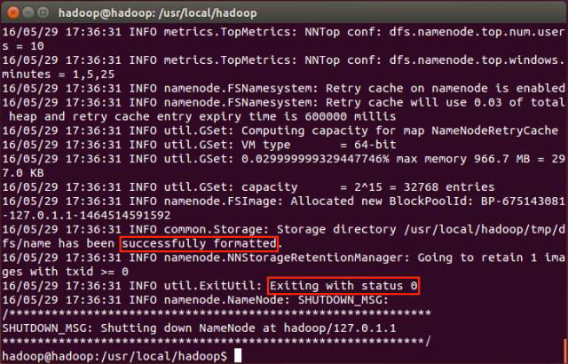
如果在这一步时提示 Error: JAVA_HOME is not set and could not be found. 的错误，则说明之前设置 JAVA_HOME 环境变量那边就没设置好，请按教程先设置好 JAVA_HOME 变量，否则后面的过程是进行不下去的。
接着开启 NameNode 和 DataNode 守护进程。
$ ./sbin/start-dfs.sh
若出现如下 SSH 提示，输入 yes 即可。
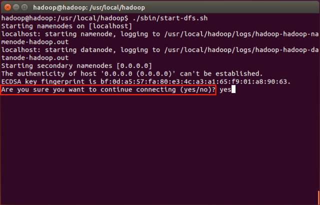
启动时可能会出现如下 WARN 提示：WARN util.NativeCodeLoader: Unable to load native-hadoop library for your platform... using builtin-java classes where applicable。该 WARN 提示可以忽略，并不会影响正常使用（该 WARN 可以编译 Hadoop 源码解决）。
启动完成后，可以通过命令 jps 来判断是否成功启动，若成功启动则会列出如下进程："NameNode"、"DataNode"和"SecondaryNameNode"（如果 SecondaryNameNode 没有启动，请运行 sbin/stop-dfs.sh 关闭进程，然后再次尝试启动尝试）。如果没有 NameNode 或 DataNode，那就是配置不成功，请仔细检查之前步骤，或通过查看启动日志排查原因。
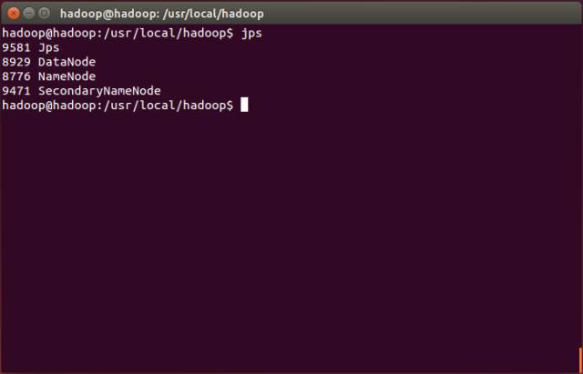
Hadoop 无法正常启动的解决方法
一般可以查看启动日志来排查原因，注意几点：
- 启动时会提示形如
hadoop: starting namenode, logging to /usr/local/hadoop/logs/hadoop-hadoop-namenode-hadoop.out，其中 hadoop 对应你的机器名，但其实启动日志信息是记录在/usr/local/hadoop/logs/hadoop-hadoop-namenode-hadoop.log中，所以应该查看这个后缀为 .log 的文件；- 每一次的启动日志都是追加在日志文件之后，所以得拉到最后面看，对比下记录的时间就知道了；
- 一般出错的提示在最后面，通常是写着 Fatal、Error、Warning 或者 Java Exception 的地方；
- 可以在网上搜索一下出错信息，看能否找到一些相关的解决方法。 此外，若是 DataNode 没有启动，可尝试如下的方法（注意这会删除 HDFS 中原有的所有数据，如果原有的数据很重要请不要这样做）：
$ ./sbin/stop-dfs.sh $ rm -r ./tmp $ ./bin/hdfs namenode -format $ ./sbin/start-dfs.sh
成功启动后，可以访问 Web 界面 http://localhost:50070 查看 NameNode 和 DataNode 信息，还可以在线查看 HDFS 中的文件。
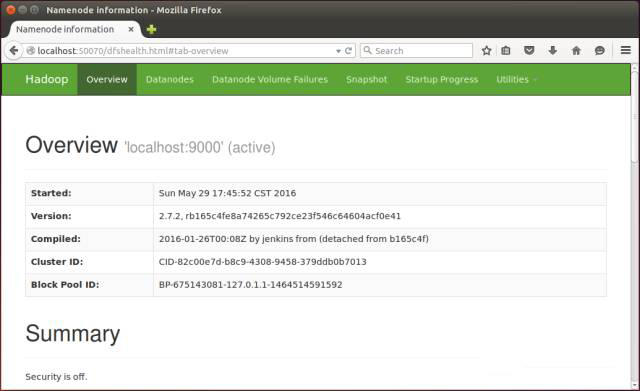
若要关闭 Hadoop，则运行
$ ./sbin/stop-dfs.sh
注意
下次启动 Hadoop 时，无需进行 NameNode 的初始化，只需要运行./sbin/start-dfs.sh就可以！